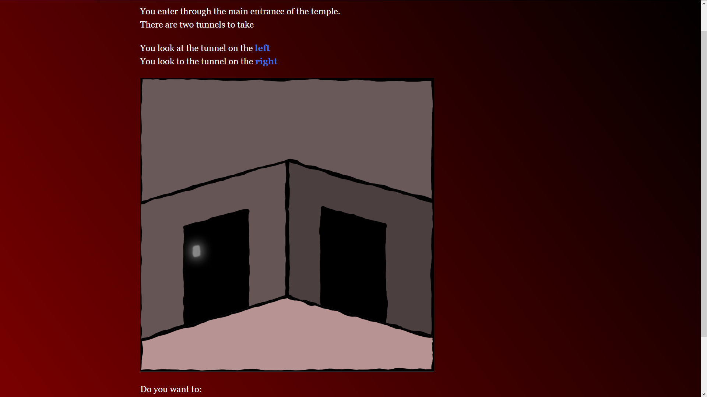
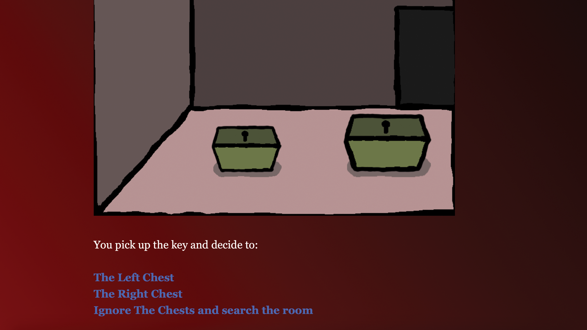
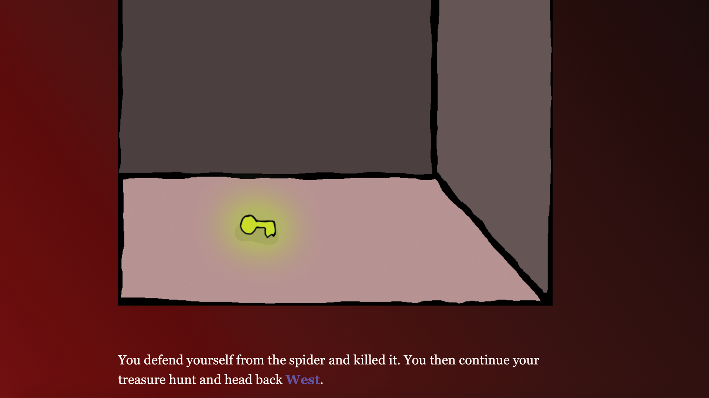
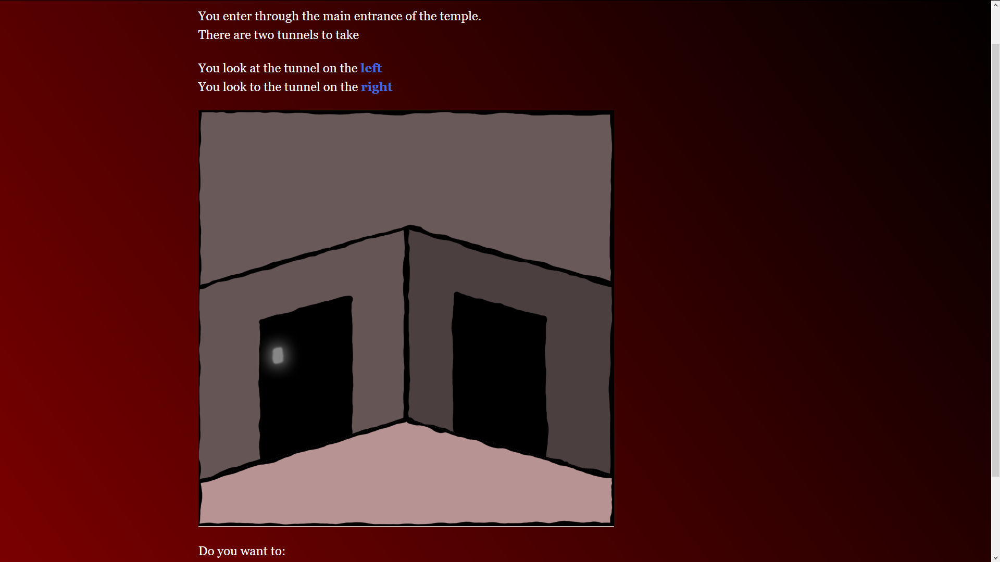
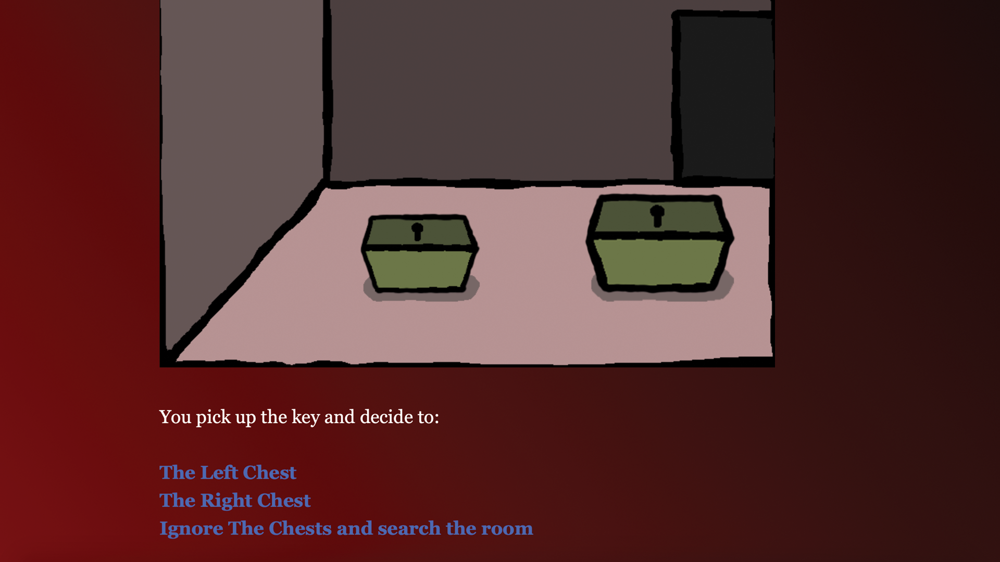
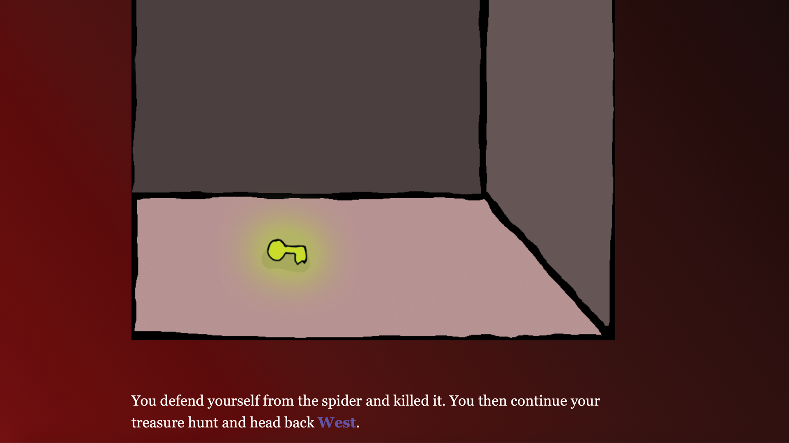

TONY CHEN
TONY CHEN
GREED TEMPLE
April 7, 2019
Summary
Greed Temple is a interactive fiction story to find the most valuable treasure within the lost temple..
Format
Game Engine: Twine
Solo Project
Development Time: Over the course of 3 weeks during a semester
Design Goals
Create an intriguing story.
Design Implementation
In the year 3092 many temples and dungeons are being formed as well as some ancient temples are being discovered. But only the strong are able to venture those temples. Temples can be filled with various monsters. You are to venture one of the lost temples and find the hidden treasure.
The game is designed straight forwards and simple. The player must make decision and choose paths the paths that they decide to take. Some options may help the players and others would bring the player danger. Make the right choices and reach the end of the temple to find the hidden treasure.
Downloads
Current Versions: Browser
 




